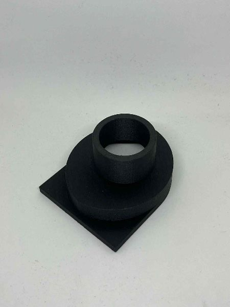
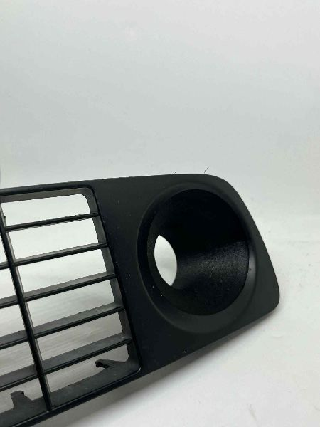
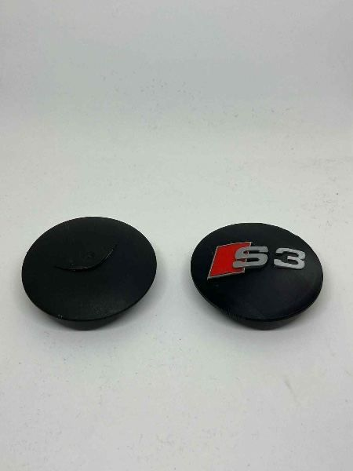

Reproduction sur mesure de pièces endommagées pour une Audi S3
Un client est venu nous voir avec une pièce cassée de sa grille de pare-chocs Audi S3 — critique, car elle s'insère directement dans l'entrée d'air moteur. En PAHT-CF, nous l'avons reproduite plus solide que l'originale. Il est ensuite revenu pour deux caches logo S3 et des cache-vis.

Toutes les pièces reproduites pour l'Audi S3







Une pièce critique, introuvable et dangereuse à laisser cassée
Un client est venu nous voir avec un problème précis: une pièce plastique de la grille de pare-chocs de son Audi S3 était cassée et introuvable en pièce détachée à un prix raisonnable. Cette pièce — de 10 cm × 8,5 cm × 5 cm — s'insère directement dans l'entrée d'air du moteur et joue un rôle structurel de guidage de l'air. Des débris de plastique dans cette zone peuvent endommager le moteur. Il ne s'agissait donc pas d'un simple problème esthétique, mais d'une question de sécurité mécanique.
À partir de la pièce endommagée, notre technicien a procédé à la modélisation 3D complète. L'enjeu principal: choisir un matériau offrant une résistance mécanique et thermique suffisante pour résister aux vibrations du moteur, aux écarts de température importants entre le compartiment moteur chaud et l'air extérieur, sans se fragiliser dans le temps.
PAHT-CF pour la pièce critique, PLA pour les éléments décoratifs
Pour la pièce d'entrée d'air, nous avons choisi le PAHT-CF (Nylon Haute Température renforcé Fibre de Carbone) — un matériau composite haute performance offrant une résistance mécanique maximale, une excellente tenue thermique, et une légèreté supérieure aux plastiques standards. La pièce ainsi reproduite est mécaniquement plus solide que la pièce d'origine tout en respectant exactement les cotes fonctionnelles requises pour l'assemblage dans le compartiment moteur.
Satisfait du résultat, le client est revenu nous voir quelques jours plus tard avec deux nouvelles demandes: reproduire deux caches cassés portant le logo S3, ainsi que des petits cache-vis disséminés sur le pare-chocs. Pour ces pièces à caractère purement esthétique et non soumises aux contraintes mécaniques du compartiment moteur, nous avons opté pour le PLA noir mat — économique, précis, et esthétiquement parfait pour un usage extérieur de cette nature.
L'ensemble des pièces reproduites a permis à notre client de retrouver une Audi S3 en parfait état visuel et mécanique, sans passer par un concessionnaire au devis prohibitif.
L'impression 3D pour la reproduction de pièces automobiles
L'automobile est l'un des secteurs où la rétroconception par impression 3D prend tout son sens. Pièces de carrosserie, éléments intérieurs, clips, supports de capteurs, protège-câbles, caches de visserie — de nombreux composants plastiques deviennent introuvables ou excessivement coûteux chez les concessionnaires après quelques années.
Notre service permet de reproduire ces pièces à des tarifs bien inférieurs au marché officiel, dans des matériaux adaptés à chaque usage: ASA résistant aux UV pour les éléments extérieurs, PETG pour les zones exposées à la chaleur modérée, PAHT-CF ou PA12-CF pour les pièces soumises à des contraintes mécaniques importantes.
Pour les clients de la région de Liège, Verviers et Eupen, notre atelier de Welkenraedt est accessible rapidement. Nous intervenons également pour des clients de toute la Belgique par envoi postal de la pièce cassée. Devis gratuit sous 24h sur photo ou sur présentation de la pièce.
Confidentialité & NDA: Les réalisations que nous partageons ici sont présentées avec l'accord explicite de nos clients. Tout projet soumis à un accord de non-divulgation (NDA) reste strictement confidentiel, aucune photo, aucune description, aucun détail technique n'est partagé sans autorisation. Votre projet et vos fichiers sont protégés.
D'autres projets

Pièce en Polypropylène pour Logopède
Outil de rééducation sur mesure pour logopède, reproduit en polypropylène par impression 3D et adapté aux besoins des patients. Réalisation O&D…
Ouvrir la fiche →
Engrenage de Hachoir Reproduit en 3D
Engrenage de hachoir cassé reproduit en PLA : rétroconception en 1 h, pièce prête en moins de 48 h. Une réalisation d'O&D Impression 3D, Welkenraedt.
Ouvrir la fiche →
Maquette Infrabel
Rails miniatures en PLA imprimés en 3D pour la maquette d'inauguration d'Infrabel. Une réalisation d'O&D Impression 3D, atelier à Welkenraedt (Liège).
Ouvrir la fiche →
Semelles de Tabouret
Semelles de tabourets 40 cm en PLA noir, imprimées sur mesure pour des gîtes Airbnb à Herve : 24 h par pièce, prototype offert. Réalisation O&D…
Ouvrir la fiche →
Pic de Barrière Reproduit en ASA
Pic de barrière décoratif cassé, redessiné à partir de photos et réimprimé en ASA résistant aux UV sur Bambu Lab X1C. Réalisation O&D, Welkenraedt.
Ouvrir la fiche →
300 Porte-clés Bicolores pour Lx Cars
300 porte-clés bicolores au logo Lx Cars, en PLA, livrés par lots de 10 après validation d'un prototype. Bambu Lab X1C + AMS. Réalisation O&D, Liège.
Ouvrir la fiche →Un projet similaire ?
Envoyez-nous votre pièce, votre fichier ou une simple photo : réponse sous 24 h.